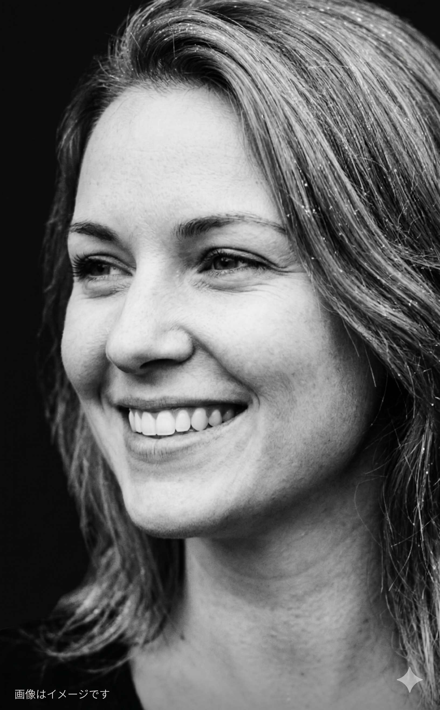

01 — Society
社会へ届ける
アンケートや座談会で集まったリアルな声を、企業や社会への提案につなげていきます。

03 — Activities
社会貢献
ひとりの声を、
社会へ、世界へ。
女性たちの小さな声が重なり合うとき、社会は少しずつ変わっていきます。
ウーマンズヴォイスは、集まった声を企業や社会へ届け、次の世代、そして世界の女性たちへとつないでいくことを目指しています。
アンケートや座談会、世代を越えた交流。ウーマンズヴォイスに集まる声のひとつひとつを、社会への提案と、次の世代へのバトンに変えていきます。
01 — Society
アンケートや座談会で集まったリアルな声を、企業や社会への提案につなげていきます。

02 — Next Generation
先輩女性の経験とことばを、これから歩み出す若い世代へ。世代を越えて学び合える関係を育てます。

03 — World Voice
国や文化を越えて、女性たちの声が響き合う未来へ。世界との対話を育てていきます。
世界貢献
女性の声とエネルギーを
世界に届ける。
国や文化、世代を越えて、女性たちの声が響き合う場所へ。& World Voice として、世界の女性たちとの対話と交流を、少しずつ育てていきます。具体的な取り組みは、準備が整い次第ご紹介します。